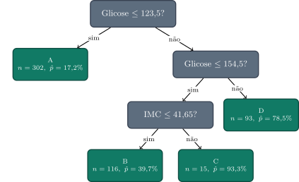
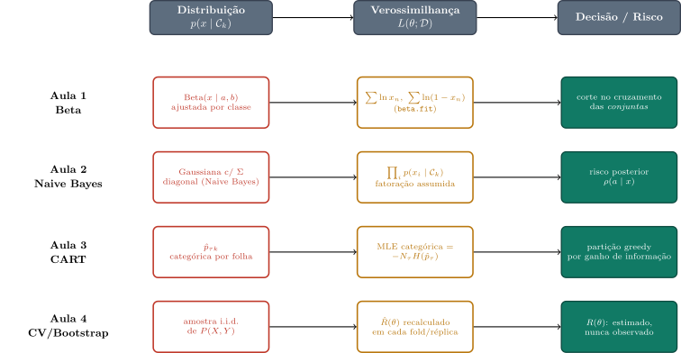

N após limpeza: 752 (diabéticos: 264, não-diabéticos: 488, prevalência: 35.1%)Revisão Integrada — O Fio Probabilístico das Aulas 1–4
Revisão 1 — Distribuição, Verossimilhança e Risco: o que as Quatro Primeiras Aulas Tinham em Comum
1 Abertura — Amarrando os Quatro Fios
A Aula 4 terminou anunciando que a próxima aula construiria o primeiro modelo paramétrico do curso — regressão linear, ajustada por máxima verossimilhança sob ruído gaussiano. Essa aula ainda vai acontecer (agora como Aula 5). Antes dela, vale parar um momento, porque as quatro aulas que já demos — Beta e limiar de decisão, Naive Bayes e teoria da decisão, árvores CART, validação cruzada e Bootstrap — parecem, na superfície, quatro assuntos técnicos distintos, cada um com seu próprio algoritmo e seu próprio jargão. Não são. Por trás da fachada, as quatro usam a mesma estrutura de três peças, anunciada já no primeiro slide do curso: uma distribuição assumida sobre os dados, uma verossimilhança usada para ajustá-la aos dados observados, e uma decisão fundamentada num risco — esperado, quando é calculável exatamente, ou estimado, quando não é.
Esta aula não introduz nada matematicamente novo. É uma revisão organizada em torno de um único fio condutor experimental — o dataset real Pima Indians Diabetes — que vai atravessar, em sequência, as quatro lentes já vistas.
O roteiro de hoje, em cinco perguntas:
- O que exatamente as quatro aulas tinham em comum, por trás da fachada de “algoritmos diferentes”?
- Como a mesma pergunta — “qual é o formato dos dados?” — aparece disfarçada em Beta, Naive Bayes e árvore de decisão?
- Por que “maximizar verossimilhança” e “minimizar impureza/erro” são, estruturalmente, a mesma operação?
- Por que nunca observamos o risco de verdade — só conseguimos estimá-lo — e o que a Aula 4 fez sobre isso?
- Que peça ainda falta para completar o quadro, e é isso que a Aula 5 resolve?
O problema motivador. Pima Indians Diabetes é um dataset real de 768 pacientes, com oito atributos clínicos (glicose, pressão, IMC, idade etc.) e um alvo binário — diabético ou não. Nenhuma das Aulas 1–4 usou exatamente este dataset (a Aula 1 usou Beta sintética; as Aulas 2 e 4 usaram Breast Cancer Wisconsin; a Aula 3 usou California Housing). É precisamente por isso que ele serve bem hoje: vamos usar o mesmo par de atributos (Glicose e IMC) nas quatro lentes, uma de cada vez, para deixar visível o que muda entre elas — e, mais importante, o que não muda.
Depois de remover os códigos de valor ausente (Glucose==0, BMI==0 — nenhum paciente vivo tem glicose ou IMC zero, então zero aqui significa “não medido”, não “medido e igual a zero”), restam 752 pacientes: 264 diabéticos e 488 não-diabéticos, prevalência de 35,1%. Guarde esse número — ele vai reaparecer no Bloco 1 como a priori real deste problema, contrastando com a priori sintética de 95%/5% que a Aula 1 usou para deixar o efeito bem exagerado e visível.
2 Bloco 1 — Distribuição e Decisão (revisão da Aula 1)
A Aula 1 nunca mencionou “diabetes”: trabalhou com duas populações sintéticas em uma única variável \(x \in [0,1]\), geradas por \(\text{Beta}(2,5)\) (classe A) e \(\text{Beta}(6,3)\) (classe B), numa proporção deliberadamente extrema de \(\pi_A=0{,}95\) contra \(\pi_B=0{,}05\). A turma respondeu, intuitivamente, que o corte ótimo entre as duas classes deveria ficar no cruzamento das curvas condicionais \(p(x\mid\mathcal{C}_A)\) e \(p(x\mid\mathcal{C}_B)\) — e essa resposta se revelou errada: o corte que minimiza o erro total é o cruzamento das conjuntas \(p(x\mid\mathcal{C}_k)\,\pi_k\), que pondera cada densidade pela frequência real da sua classe. A mesma lição reapareceu, no caso discreto, na triagem médica de DLFC: com sensibilidade \(90\%\), falso positivo \(3\%\) e prevalência de apenas \(1\%\), um teste positivo ainda deixa a probabilidade de doença em apenas \(23\%\) — a priori baixa, não a verossimilhança alta, é quem decide.
Hoje, a mesma máquina — ajuste de Beta por classe, comparação de cruzamentos — roda sobre um dado real: a coluna Glicose do Pima Indians Diabetes, separada por diabético/não-diabético.

Beta ajustada | não-diabético: a=3.49, b=4.50 | diabético: a=3.18, b=1.78
priori real: pi(não-diabético)=0.649, pi(diabético)=0.351O ajuste (via scipy.stats.beta.fit, o mesmo estimador de máxima verossimilhança usado na Aula 1 — sem forma fechada simples, porque as estatísticas suficientes da Beta são \(\sum\ln x_n\) e \(\sum\ln(1-x_n)\), não a média aritmética) dá \(\text{Beta}(3{,}49,\,4{,}50)\) para não-diabéticos e \(\text{Beta}(3{,}18,\,1{,}78)\) para diabéticos: a curva dos diabéticos é visivelmente deslocada para glicoses mais altas, exatamente como o exame clínico sugere.
A priori real aqui é \(\pi(\text{não-diabético}) \approx 0{,}649\) e \(\pi(\text{diabético}) \approx 0{,}351\) — assimétrica, mas muito menos extrema do que os \(0{,}95/0{,}05\) sintéticos da Aula 1. Isso já é uma primeira lição sobre a diferença entre laboratório e mundo real: a Aula 1 escolheu uma assimetria extrema de propósito, para que o efeito do deslocamento do corte fosse visualmente óbvio; o mundo real raramente é tão gentil.

t_cond = 134.2 mg/dL -> 81 alarmes falsos + 116 escapes = 197 erros
t_conj = 148.3 mg/dL -> 37 alarmes falsos + 157 escapes = 194 errosO cruzamento das condicionais cai em \(134{,}2\) mg/dL, produzindo \(81\) alarmes falsos e \(116\) escapes (\(197\) erros no total). Pesando cada curva pela priori real, o cruzamento das conjuntas se desloca para \(148{,}3\) mg/dL — mais alarmes falsos evitados às custas de mais escapes, mas o total cai para \(194\) erros. O princípio geométrico é idêntico ao da Aula 1 (\(x \in \mathcal{R}_A \iff p(x,\mathcal{C}_A) > p(x,\mathcal{C}_B)\), PRML eqs. 1.78–1.79): decidir pela conjunta maior é decidir pela posteriori maior, porque a evidência \(p(x)\) não depende de \(k\). A diferença é de magnitude, não de mecanismo: com prioris \(65\%/35\%\), o deslocamento do corte e o ganho em erros totais são modestos (\(197 \to 194\)), bem mais discretos do que a virada dramática que a razão \(19\) para \(1\) da Aula 1 produzia. Isso não é uma falha do princípio — é exatamente o que se espera quando a assimetria de classes é ela mesma mais moderada.
DicaSe a prevalência de diabetes nesta população fosse exatamente \(50\%\), o que aconteceria com a distância entre o cruzamento das condicionais e o cruzamento das conjuntas?
Dica: pense no papel exato que \(\pi_k\) desempenha na equação \(p(x,\mathcal{C}_k) = p(x\mid\mathcal{C}_k)\,\pi_k\) quando \(\pi_A=\pi_B\).
DicaPrioris, Cruzamentos e o Caso Real
- □ Se a prevalência real fosse exatamente \(50\%/50\%\), o cruzamento das condicionais e o cruzamento das conjuntas coincidiriam exatamente, e a distinção entre os dois deixaria de ter qualquer efeito prático.
- □ Como a razão de prioris hoje (\(65/35 \approx 1{,}86\)) é muito menor que a da Aula 1 (\(95/5 = 19\)), o deslocamento do corte hoje é necessariamente menor em termos absolutos de mg/dL, mas o argumento matemático que o produz é o mesmo.
- □ Num exame de triagem para uma doença ainda mais rara que a prevalência de \(1\%\) usada no exemplo da DLFC — digamos, \(0{,}01\%\) — o efeito “sensibilidade alta não implica probabilidade pós-teste alta” ficaria ainda mais pronunciado, não menos.
- □ Já que o corte pela conjunta reduziu o número total de erros (\(197 \to 194\)), ele necessariamente reduziu tanto o número de alarmes falsos quanto o número de escapes, individualmente.
3 Bloco 2 — Independência e Teoria da Decisão (revisão da Aula 2)
A Aula 2 generalizou o Bloco 1 de duas formas ao mesmo tempo: de uma variável para \(d\) variáveis, e de um limiar simples para uma teoria da decisão completa (perda \(L(k,a)\), risco posterior \(\rho(a\mid x) = \sum_k L(k,a)\,p(\mathcal{C}_k\mid x)\), risco de Bayes \(R^\star\)). A ponte entre as duas foi o Naive Bayes: assumir independência condicional entre atributos dado a classe, \(p(\mathbf{x}\mid\mathcal{C}_k) = \prod_i p(x_i\mid\mathcal{C}_k)\), para não precisar estimar uma densidade conjunta em \(d\) dimensões com poucos dados. No Breast Cancer Wisconsin, essa suposição teve um preço mensurável: os atributos smoothness_mean e concavity_mean tinham correlação intra-classe de \(0{,}64\) nos tumores malignos e \(0{,}22\) nos benignos, e ignorar essa correlação (covariância diagonal, Naive Bayes) custou cerca de \(2\) pontos percentuais de acurácia (\(85\%\) contra \(87\%\) da Gaussiana de covariância plena).
Hoje, acrescentamos IMC à Glicose do Pima e repetimos exatamente essa comparação.

correlação Glicose x IMC | não-diabético: 0.123 | diabético: 0.057
acurácia cov. plena: 0.7646 | acurácia Naive Bayes (diagonal): 0.7646A correlação intra-classe entre Glicose e IMC é \(0{,}123\) nos não-diabéticos e \(0{,}057\) nos diabéticos — bem mais baixa do que os \(0{,}64/0{,}22\) do Breast Cancer Wisconsin. E o resultado bate com a expectativa: as acurácias de covariância plena e diagonal são idênticas até a quarta casa decimal (\(76{,}46\%\)), porque com correlação tão baixa, as elipses de covariância plena já são quase circulares — a covariância diagonal não está descartando quase nenhuma informação real. Este é o ponto que a Aula 2 já havia adiantado, citando Domingos & Pazzani (1997) via PRML §8.2.2: “classifica bem, estima mal”. Aqui completamos a lição: o preço da suposição de independência não é uma constante do método — é uma função de quanto os atributos realmente covariam dentro de cada classe. No Breast Cancer Wisconsin o preço foi de \(2\) pontos; aqui, foi de zero.
Vale também lembrar a peça que a Aula 2 empilhou por cima do Naive Bayes: a teoria da decisão geral. Numa triagem de diabetes, o custo de um escape (diabético não identificado, que não recebe tratamento) tipicamente excede o custo de um alarme falso (paciente saudável encaminhado para um exame extra). O limiar de decisão ótimo sob essa assimetria de custos não é o de \(0{,}5\) de probabilidade posterior — desloca-se para favorecer detectar mais diabéticos às custas de mais alarmes falsos, exatamente pela mesma lógica de \(\rho(a\mid x) = \sum_k L(k,a)\,p(\mathcal{C}_k\mid x)\) que a Aula 2 formalizou.
DicaSe Glicose e IMC fossem perfeitamente correlacionados dentro de cada classe (\(\rho=1\)), a Gaussiana de covariância plena e o Naive Bayes ainda coincidiriam?
Dica: pense no que a covariância diagonal literalmente descarta, e no que sobra quando ela descarta tudo que existe para descartar.
DicaNaive Bayes: Quando a Independência Custa Caro
- □ Se Glicose e IMC fossem perfeitamente correlacionados (\(\rho=1\)) dentro de cada classe, a Gaussiana diagonal (Naive Bayes) descartaria uma informação real e relevante, ao contrário do caso desta aula onde \(\rho\approx0\).
- □ Num problema com \(100\) atributos em que apenas dois são fortemente correlacionados entre si e os outros \(98\) são praticamente independentes uns dos outros, o Naive Bayes pagaria um preço de acurácia comparável ao preço pago quando todos os \(100\) atributos são fortemente correlacionados entre si.
- □ Num sistema de recomendação que assume, para simplificar, que o interesse de um usuário por “filmes de ação” e por “filmes com efeitos especiais” são condicionalmente independentes dado o gênero preferido do usuário, o mesmo tipo de preço de correlação ignorada se aplica, mesmo fora do domínio médico desta aula.
- □ Como a suposição de independência do Naive Bayes é sempre uma simplificação da realidade, conclui-se que ela sempre reduz a acurácia do classificador em relação a um modelo de covariância plena, ainda que por uma margem pequena.
4 Bloco 3 — Partição Gulosa e Verossimilhança Categórica (revisão da Aula 3)
A Aula 3 abandonou a suposição de família paramétrica: em vez de assumir Beta ou Gaussiana, a árvore de decisão deixa o próprio dado escolher a forma da partição, greedy, um split por vez. A tese central daquela aula foi mostrar que “reduzir impureza” (entropia ou Gini) é, matematicamente, maximizar verossimilhança — para uma folha de classificação, a categórica \(\hat p_{\tau k} = n_{\tau k}/N_\tau\) que maximiza a log-verossimilhança é exatamente a que minimiza a entropia daquela folha, porque \(\ell_\tau(\hat p_\tau) = -N_\tau H(\hat p_\tau)\). A árvore construída sobre o California Housing (regressão, MedInc/HouseAge, cinco folhas) tornou esse processo concreto, split por split.
Hoje, crescemos uma árvore pequena — mas de classificação, não de regressão, o que deixa a conexão entropia/Gini/MLE ainda mais direta — sobre Glicose e IMC no Pima.
|--- Glicose <= 123.50
| |--- class: 0
|--- Glicose > 123.50
| |--- Glicose <= 154.50
| | |--- IMC <= 41.65
| | | |--- class: 0
| | |--- IMC > 41.65
| | | |--- class: 1
| |--- Glicose > 154.50
| | |--- class: 1
N treino=526, N teste=226
acurácia treino=0.7738, acurácia teste=0.7522
A árvore, limitada a \(4\) folhas para caber num quadro didático, chega a \(77{,}4\%\) de acurácia de treino e \(75{,}2\%\) de teste — guarde os dois números, eles voltam no Bloco 4. As folhas contam uma história clinicamente sensata: quem tem Glicose \(\le 123{,}5\) mg/dL raramente é diabético (\(\hat p=17{,}2\%\), folha A, \(n=302\)); quem tem Glicose \(>154{,}5\) quase sempre é (\(\hat p=78{,}5\%\), folha D); a faixa intermediária (\(123{,}5\) a \(154{,}5\)) se divide pelo IMC — abaixo de \(41{,}65\) ainda majoritariamente não-diabético (\(\hat p=39{,}7\%\), folha B), acima disso fortemente diabético (\(\hat p=93{,}3\%\), folha C, mas só \(n=15\) pacientes — um lembrete de que folhas pequenas merecem menos confiança).

Raiz: H=0.648 nats, Gini=0.456, erro bruto=0.352
Após split: H=0.551 nats (IG=0.097), Gini=0.369 (ganho=0.087), erro bruto=0.272O primeiro split (Glicose ≤ 123,5) reduz a entropia de \(0{,}648\) para \(0{,}551\) nats — um ganho de informação \(IG=0{,}097\) nats, exatamente \(I(S;\mathcal{C})\) na notação da Aula 3, onde \(S\) é o lado do split. O Gini cai de \(0{,}456\) para \(0{,}369\) (ganho de \(0{,}087\)), e o erro bruto (se cada folha previsse sua classe majoritária) cai de \(35{,}2\%\) para \(27{,}2\%\). As três medidas concordam em direção — o split ajuda — porque, ao contrário do contraexemplo deliberado que a Aula 3 construiu (dois splits com erro bruto empatado em \(0{,}25\) mas \(IG\) bem diferente: \(0{,}216\) contra \(0{,}131\) nats), este split real não empata as três métricas por acidente de construção.
E vale reencontrar aqui o contraste geométrico com o Bloco 2: a fronteira desta árvore é axis-aligned — cada split corta perpendicular a um eixo (Glicose ou IMC), nunca na diagonal. As elipses de covariância do Bloco 2, por outro lado, podem se inclinar livremente. Nenhuma das duas fronteiras é “melhor” em abstrato — cada uma paga um preço estrutural diferente, exatamente a limitação que a Aula 3 nomeou explicitamente ao fechar aquele bloco.
DicaUm médico usa a regra manual “Glicose acima de 140 mg/dL \(\Rightarrow\) suspeita de diabetes” — isso é, estruturalmente, uma árvore de decisão? Se for, por que a árvore do algoritmo é “melhor” (ou não é)?
Dica: pense no que faz algo ser uma árvore de decisão — é o algoritmo de ajuste, ou a forma da regra final?
DicaÁrvore, Impureza e a Regra do Médico
- □ A regra manual do médico (“Glicose \(>140 \Rightarrow\) suspeita”) é estruturalmente uma árvore de decisão degenerada, com uma única folha de decisão e nenhum critério de impureza envolvido na sua escolha.
- □ Se um split greedy reduzisse a impureza de uma folha, mas o split seguinte (dentro da mesma sub-árvore) só fosse vantajoso se combinado com um terceiro split ainda não considerado, o algoritmo guloso da Aula 3 identificaria essa combinação de qualquer forma, porque avalia globalmente todos os splits futuros antes de escolher o atual.
- □ Num sistema de recomendação de crédito que decide “aprovar automaticamente” só quando o escore de crédito supera um limiar único, a mesma lógica de “regra de um único corte” do médico se aplica, com a mesma limitação de não capturar interações entre atributos.
- □ Como o algoritmo guloso da árvore encontrou um split com \(IG\) positivo na raiz, conclui-se que esse split individual é necessariamente parte da árvore de profundidade ilimitada (sem limite de folhas) que minimizaria globalmente a impureza total.
5 Bloco 4 — Estimando o Risco que Nunca Observamos (revisão da Aula 4)
A Aula 4 mudou de assunto: em vez de um modelo, o objeto de estudo passou a ser o procedimento de medir o desempenho de um modelo. A tese central foi que o erro de treino \(\hat R(\theta)\) é uma estimativa enviesada para baixo do risco esperado \(R(\theta) = \mathbb{E}_{(X,Y)\sim P}[\mathcal{L}(Y,f_\theta(X))]\) — no Breast Cancer Wisconsin, a acurácia de treino chegou a \(100\%\) a partir da profundidade \(6\), enquanto a de teste tinha seu pico em \(92{,}98\%\) na profundidade \(5\). A validação cruzada de \(5\) ou \(10\) folds foi apresentada como uma simulação de amostragem repetida de \(P(X,Y)\) (ESL §7.10) — e, honestamente, o experimento daquela aula mostrou LOOCV (sem viés teórico, mas caro) produzindo uma estimativa menor (\(89{,}4\%\)) do que \(5\)-fold e \(10\)-fold repetidos (\(\sim92\)–\(93\%\)), um resultado específico daquela amostra, não uma garantia geral. A CV escolheu, por custo-complexidade, uma árvore de \(4\) folhas empatando com a de \(19\) folhas em \(91{,}8\%\) de teste; a regra de \(1\) desvio-padrão levou a uma árvore de só \(2\) folhas, com um custo real de \(1{,}7\) ponto percentual (\(90{,}1\%\)). O Bootstrap, por fim, respondeu uma pergunta diferente da CV: não “qual é o risco esperado do procedimento”, mas “quão incerta é uma estatística já calculada” — com intervalos de confiança de \([87{,}7\%,95{,}9\%]\) (reamostrando o teste) e \([88{,}9\%,93{,}6\%]\) (reamostrando e reajustando o treino).
Hoje, aplicamos exatamente esse arsenal — CV e Bootstrap — para avaliar honestamente a árvore de \(4\) folhas do Bloco 3.

CV 5-fold: [0.755 0.714 0.695 0.695 0.705] média=0.7128 dp=0.0221
split único (teste): 0.7522
Bootstrap (reamostra teste): média=0.7522 IC95=[0.6903,0.8097]
Bootstrap (reamostra+reajusta treino): média=0.7433 IC95=[0.6924,0.7788]A \(5\)-fold CV no conjunto de treino dá uma média de \(71{,}3\%\) com desvio-padrão de \(2{,}2\%\) — no formato “média\(\pm\)desvio” que a Aula 4 insistiu ser obrigatório, \(71{,}3\%\pm2{,}2\%\). A acurácia do nosso único split de teste, \(75{,}2\%\), cai perto do topo da faixa revelada pelos cinco folds (que vão de \(69{,}5\%\) a \(75{,}5\%\)) — não porque a CV esteja “errada”, mas porque um único split é, como a Aula 4 insistiu, um único sorteio de uma distribuição, e o sorteio de hoje calhou de ser um dos mais favoráveis dessa distribuição. É exatamente o motivo de reportar CV com desvio-padrão, não um único número: o número isolado do split de teste, sem esse contexto, sugeriria um desempenho mais otimista do que a média honesta.
O Bootstrap reafirma a distinção conceitual da Aula 4: reamostrar as previsões do teste (mantendo o modelo fixo) mede a incerteza de medição daquele número específico (\(75{,}2\%\), IC\(_{95\%}=[69{,}0\%,81{,}0\%]\)); reamostrar e reajustar o treino mede a instabilidade do procedimento de ajuste em si (\(74{,}3\%\), IC\(_{95\%}=[69{,}2\%,77{,}9\%]\)) — duas perguntas relacionadas, mas não idênticas, exatamente como a Aula 4 separou.
DicaA média de CV (\(71{,}3\%\)) ficou abaixo da acurácia do nosso split único de teste (\(75{,}2\%\)). Isso significa que o split de teste foi “escolhido a dedo” ou está errado de algum jeito?
Dica: pense na CV como cinco sorteios de uma distribuição, e o split de teste como um sexto sorteio independente da mesma distribuição.
DicaCV, Split Único e o que “Discrepância” Significa
- □ Se a acurácia do split único estivesse dentro da faixa observada nos cinco folds de CV, isso por si só já seria evidência de que o split de teste não foi selecionado de forma tendenciosa.
- □ No limite em que o conjunto de teste tivesse infinitos pontos, a acurácia medida nele convergiria para o risco esperado verdadeiro \(R(\theta)\), e a distância entre essa acurácia e a média de CV desapareceria.
- □ Numa pesquisa eleitoral por amostragem, duas pesquisas com metodologias igualmente corretas podem legitimamente divergir por alguns pontos percentuais só por acaso de amostragem — a mesma lógica estatística que explica a diferença entre CV e o split único desta aula.
- □ Como a CV usa \(5\) vezes mais “medições” do que um único split de teste, a média de CV é sempre mais próxima do risco esperado verdadeiro do que qualquer split único poderia ser, em qualquer amostra particular.
6 Bloco 5 — Síntese: As Quatro Peças, Uma Estrutura
Chegou a hora de desenhar o mapa completo. Nas quatro aulas, a mesma sequência de três perguntas se repete, só que respondida por máquinas diferentes:
| Distribuição assumida | Verossimilhança usada para ajustar | Decisão / risco | |
|---|---|---|---|
| Aula 1 | Beta\((x\mid a,b)\) por classe | \(\sum\ln x_n,\ \sum\ln(1-x_n)\) (sem forma fechada; scipy.stats.beta.fit) |
corte no cruzamento das conjuntas \(p(x,\mathcal{C}_k)\) |
| Aula 2 | Gaussiana com \(\Sigma\) diagonal (Naive Bayes) ou plena | fatoração \(\prod_i p(x_i\mid\mathcal{C}_k)\) assumida | risco posterior \(\rho(a\mid x)=\sum_k L(k,a)\,p(\mathcal{C}_k\mid x)\) |
| Aula 3 | categórica \(\hat p_{\tau k}\) por folha | MLE categórica \(=-N_\tau H(\hat p_\tau)\) | partição greedy por ganho de informação (IG) |
| Aula 4 | amostra i.i.d. de \(P(X,Y)\) (suposição sobre o processo gerador, não sobre \(x\)) | \(\hat R(\theta)\) recalculado em cada fold/réplica | \(R(\theta)\): nunca observado, só estimado (CV, Bootstrap) |
A coluna do meio é o ponto que mais se disfarça: em toda aula, algum objeto foi maximizado — uma log-verossimilhança, ainda que às vezes escrita como “minimizar entropia” ou “minimizar soma de quadrados”. Na Aula 3, a equivalência foi provada explicitamente (\(-N_\tau H(\hat p_\tau)\)); nas Aulas 1 e 2, é a definição padrão de MLE; na Aula 4, o objeto que se maximiza (ajustar \(\theta\) ao treino) é justamente o que se torna enganoso como medida de risco — a mesma operação de ajuste que funciona bem na coluna do meio se torna a fonte do viés otimista que a coluna da direita precisa corrigir.
Vale registrar, com a mesma honestidade que a Aula 4 pediu para os resultados numéricos, um cuidado de notação: o símbolo \(k\) significa índice de classe (\(\mathcal{C}_k\)) nas Aulas 1–3, mas número de folds na Aula 4 — dois usos completamente distintos do mesmo símbolo. E o custo/penalidade de complexidade aparece como multiplicador de custo assimétrico na Aula 2 (\(L(k,a)\), \(c_I/c_{II}\)) e como penalidade de custo-complexidade (\(\lambda\), ou ccp_alpha) nas Aulas 3–4 — parentes conceituais (ambos trocam “ajuste” por “algum outro objetivo”), mas não a mesma quantidade. Não é um erro do curso: é a colisão natural de um alfabeto finito de símbolos sendo reciclado ao longo de quatro aulas — mas vale a pena nomear explicitamente, porque confundir os dois usos de \(k\) é exatamente o tipo de erro que “decorar a fórmula sem entender a mecânica” produz.

DicaA Aula 5 vai construir regressão linear com sua própria distribuição, verossimilhança e decisão. Isso significa que regressão linear “é a mesma coisa” que uma árvore de decisão, só escrita com notação diferente?
Dica: pense na diferença entre “usar os mesmos ingredientes” e “fazer o mesmo prato”.
DicaMesma Estrutura, Técnicas Diferentes
- □ Se dois algoritmos compartilham a mesma estrutura de três peças (distribuição, verossimilhança, decisão), isso implica que eles vão sempre produzir a mesma fronteira de decisão sobre o mesmo dado.
- □ No limite em que a distribuição assumida por um modelo está completamente errada (por exemplo, assumir Beta quando os dados são multimodais e não têm nada a ver com Beta), a etapa de verossimilhança ainda maximiza alguma coisa, mas o resultado da etapa de decisão pode ser sistematicamente ruim, mesmo com a maximização executada “corretamente”.
- □ Um estudante que aprende primeiro a estrutura de três peças desta aula, antes de ver o algoritmo específico de regressão linear na Aula 5, deveria ser capaz de prever que existirá algo desempenhando o papel de “distribuição assumida” ali também — mesmo sem ainda saber qual é.
- □ Como as quatro aulas revisadas hoje compartilham a mesma estrutura de três peças, conclui-se que a escolha de qual distribuição assumir (Beta, Gaussiana, categórica, i.i.d. de \(P(X,Y)\)) é um detalhe secundário que pouco afeta o resultado final de cada técnica.
7 Fechamento
Voltando ao roteiro de abertura, com uma frase cada:
- O que as quatro aulas tinham em comum: a mesma estrutura de três peças — uma distribuição assumida, uma verossimilhança maximizada para ajustá-la, e uma decisão fundamentada em risco.
- Como “qual é o formato dos dados?” se disfarça: como parâmetros de uma Beta, como uma fatoração de independência condicional, e como a proporção categórica dentro de uma folha — três respostas diferentes à mesma pergunta.
- Por que maximizar verossimilhança \(=\) minimizar impureza/erro: porque, para uma categórica, a log-verossimilhança é literalmente \(-N_\tau H(\hat p_\tau)\) — não uma analogia, uma identidade algébrica.
- Por que nunca observamos o risco de verdade: porque \(R(\theta)\) é uma esperança sobre a distribuição populacional desconhecida \(P(X,Y)\); a Aula 4 respondeu simulando repetidamente essa amostragem via CV, e quantificando a incerteza remanescente via Bootstrap.
- Que peça falta: todas as quatro verossimilhanças de hoje foram sobre densidades, fatorações ou frequências categóricas — nenhuma foi sobre um alvo contínuo ligado linearmente aos atributos. Essa é exatamente a peça que a Aula 5 (Regressão Linear e Máxima Verossimilhança) adiciona: mínimos quadrados como MLE sob um modelo de ruído gaussiano — o mesmo princípio de sempre, agora aplicado a um modelo paramétrico contínuo em vez de uma densidade, uma árvore, ou um esquema de reamostragem.